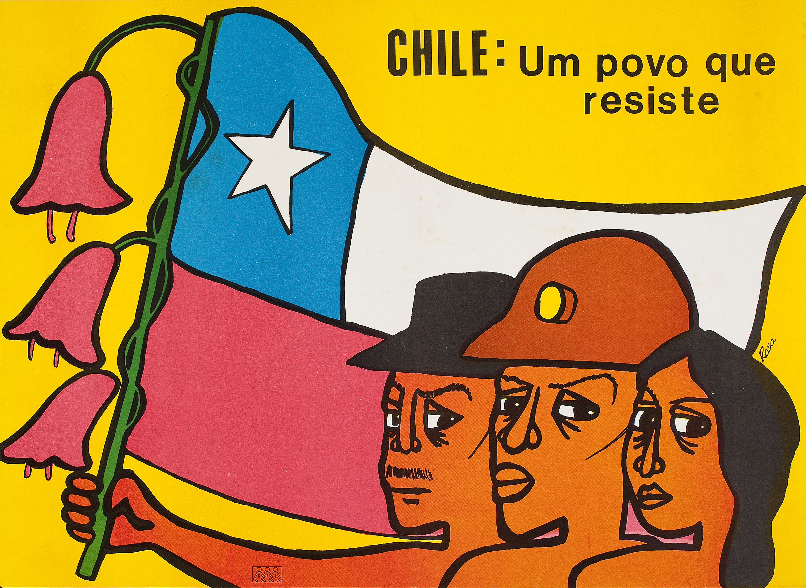

O Brasil tem promovido os direitos da Justiça de Transição como uma forma de tentar superar o legado autoritário da ditadura. Para tanto, comissões governamentais têm trabalhado na busca por mortos e desaparecidos, na reparação econômica, moral, simbólica e psicológica aos que foram perseguidos ou sofreram violações de direitos humanos, e na promoção e garantia dos direitos da Justiça de Transição.
{kind=link}
Comissão Especial sobre Mortos e Desaparecidos Políticos
Após anos de luta e pressão dos familiares de mortos e desaparecidos e de vítimas das violências do Estado, com o paulatino amadurecimento político da sociedade para essas pautas, foi criada a Comissão Especial sobre Mortos e Desaparecidos Políticos (CEMDP). Um exemplo dessa luta e uma experiência que foi precursora da CEMDP e da CNV foi o “Dossiê Ditadura: Mortos e Desaparecidos Políticos no Brasil (1964-1985)”. Esse dossiê chegou em 2009 a sua terceira versão revisada. A primeira versão foi produzida, ainda durante a ditadura, em 1979, por familiares de mortos e desaparecidos que organizaram informações que denunciavam as perseguições, assassinatos, torturas e outras violências praticadas pelo Estado no período. Em 1995, a Comissão de Familiares de Mortos e Desaparecidos Políticos realizou uma primeira revisão e ampliação do dossiê sistematizando pesquisas realizadas em arquivos de vários órgãos e instituições brasileiras. Essa versão relacionou 358 vítimas da ditadura, das quais 138 seriam desaparecidos políticos.
A CEMDP foi a primeira Comissão de Estado criada especificamente para lidar com os legados da ditadura. Criada em 1995, e instalada no dia 6 de janeiro de 1996, a CEMDP possui um Conselho formado por 7 membros indicados pelo presidente:
- Uma pessoa ligada aos familiares de mortos e desaparecidos;
- Um membro do Ministério Público Federal (MPF);
- Um integrante do Ministério da Defesa;
- Um membro da Comissão de Direitos Humanos da Câmara dos Deputados e
- Três membros de livre indicação presidencial.
Entre os principais objetivos da CEMDP estão:
a) Trabalhar pela localização e identificação de restos mortais dos desaparecidos políticos.
b) Reconhecer os mortos e desaparecidos que foram vítimas da ditadura
c) Realizar a reparação dos familiares dessas vítimas
Com vistas à realização do primeiro e do segundo objetivo, foi constituído o Grupo de Trabalho Perus (GTP). Além de articulações para a realização de políticas que promovam o direito à Memória e à Verdade, bem como o apoio ao comprimento do direito à Justiça e a efetivação das reformas institucionais, a CEMDP realiza a reparação material com pagamentos de indenizações.
Desde sua criação, 355 familiares já foram indenizados de acordo com a legislação, somando um montante de quase 40 milhões de reais.
A CEMDP passou por duas fases desde sua criação. Na primeira fase, ocorreu a avaliação e julgamento dos processos de reconhecimento de assassinato e desaparecimento das 136 pessoas relacionadas no Anexo I da Lei 9.140 (lei que criou a CEMDP). Nesse momento ela também trabalhou para o reconhecimento de pessoas desaparecidas que não constavam no Anexo I. Foram apresentados 234 novos casos, dos quais apenas 148 foram deferidos, sendo comprovados como mortos e desaparecidos do período, enquanto outros 86 casos foram indeferidos. Com isso, contabilizando os novos casos com os já apontados no Anexo I, ocorreu a ampliação do número oficial de vítimas fatais da ditadura – de 136 para 284, ao final da primeira fase.
Com as Leis 10.536 (de 14 de agosto de 2002) e a 10.875 (de 1 de junho de 2004), a CEMDP entra em uma nova fase, de ampliação do entendimento sobre o conceito legal de morto político. A Lei de 2002 ampliava o período de abrangência dos casos e reabria o prazo para apresentação de requerimentos, ou seja, de pedidos de familiares por indenização e reconhecimento de uma pessoa como morta ou desaparecida. Já a de 2004 ampliava o escopo de vítimas que poderiam ser reconhecidas, passando, então, a serem incluídas vítimas de manifestações públicas ou de conflitos armados com agentes do poder público, e as vítimas que teriam se suicidado em decorrência de prisões ilegais e sequelas psicológicas resultantes de atos de tortura. Ao final dessa segunda fase, contando os casos revisados e os novos requerimentos aprovados, 362 pessoas foram reconhecidas como mortas e desaparecidas.
Apesar de prevista na Lei de 1995 a obrigação da CEMDP de localizar, buscar e identificar os restos mortais de desaparecidos políticos, somente depois de 2005 a comissão passa a se dedicar rigorosamente a essas incumbências. Com o debate em torno do PNDH-3 e dos eixos do direito à Memória e à Verdade, bem como com a criação da CNV, a CEMDP ganha nova vida em seus trabalhos inaugurando uma série de medidas, programas e trabalhos que serão mencionados abaixo. Ainda é fundamental mencionar que em 2007 a CEMDP lança o primeiro livro-relatório, o “Direito à Memória e à Verdade”, no qual o Estado elabora uma versão oficial dos fatos nefastos que tiveram curso na ditadura civil-militar brasileira.
Busca por Desaparecidos
É um dever legal do Estado brasileiro realizar todos os esforços na busca, localização e identificação dos mortos e desaparecidos políticos, bem como de entregar os restos mortais aos familiares desses. Assim o determinam o incisivo II da Lei 9.140 e a sentença da Corte Interamericana de Direitos Humanos (CIDH), de 24 de novembro de 2010, no Caso Julia Gomes Lund VS Brasil. A CNV estabeleceu o número de 434 vítimas do regime ditatorial brasileiro; destes, 191 como mortos, 210 desaparecidos e 33 corpos que foram posteriormente localizados. O relatório final da CNV ainda aponta que é urgente a continuação da investigação do número de vítimas, e estima ainda que 1.196 camponeses, 8.300 índios seriam vítimas também da cruel e assassina ditadura brasileira. Discute-se agora a necessidade de ampliar esse escopo de investigação, buscando inserir na categoria e na contagem das vítimas as populações de favelas e periferias, dado que o Estado brasileiro já possui muitas evidências de que essas pessoas também foram vitimadas pela violência do exército e das policias na ditadura.
Duas frentes de trabalho da CEMDP se destacam aqui. A primeira delas é a criação de um banco de material genético dos familiares de mortos e desaparecidos políticos. É uma temática bastante delicada o Estado solicitar a doação de material genético desses familiares, no entanto, é uma tarefa fundamental para que restos mortais encontrados possam vir a ser identificados e devolvidos aos familiares. A segunda frente é a da constituição de uma equipe e de um laboratório de Antropologia Forense para a formação de laudos alternativos e de uma perícia articulada de forma interdisciplinar e com maior autonomia.
Três desaparecidos da vala de Perus já foram identificados, são eles: Frederico Eduardo Mayr, Dênis Casemiro e Flávio de Carvalho Molina. No caso do Araguaia, Maria Lúcia Petit da Silva e Bergson Gurjão Farias foram identificados, restando uma estimativa de 61 desaparecidos a serem encontrados. Caso como o desaparecimento de João Leonardo no sertão da Bahia, o de vários desaparecidos reclamados a CEMDP no Rio de Janeiro e o da chacina do Parque de Foz do Iguaçu apontam para a necessidade da ampliação das frentes e grupos de trabalho da CEMDP – que ainda conta com recursos técnicos, humanos e financeiros bastante limitados.
Grupo de Trabalho Perus
O caso da vala clandestina do cemitério de Perus tem uma longa história. Construído na gestão do ex-prefeito Paulo Maluf, em 1971, o cemitério Dom Bosco recebia corpos de pessoas não identificadas, de indigentes e de vítimas da repressão política. Em 1973, a família de Iuri e Alex de Paula Xavier Pereira, na busca pelos restos mortais dos dois irmãos nos cemitério de São Paulo, descobre que Iuri havia sido enterrado naquele cemitério. Tempos depois, a família descobre que Alex também estava enterrado ali, mas registrado com seu codinome da clandestinidade, João Maria de Freitas. Esta descoberta atiça a suspeita dos familiares que começam a buscar de várias maneiras os restos mortais de seus entes queridos nos registros dos cemitérios e IML’s. A busca de anos culmina, em 1990, com a descoberta do repórter Caco Barcellos da Vala Clandestina de Perus. Ali foram encontradas 1049 caixas contendo ossadas, sendo que cerca de 25% das caixas foram apontadas como contendo mais de um indivíduo. Na identificação dessas é que trabalha o Grupo de Trabalho Perus (GTP).
Criado pela Portaria n° 620, no dia 09 de outubro de 2014, o GTP é resultado da parceira de três instituições: a Secretária de Direitos Humanos da Presidência da República (SDH/PR) – atualmente denominada Secretaria Especial de Direitos Humanos do Ministério da Justiça e Cidadania -, a Secretaria Municipal de Direitos Humanos e Cidadania de São Paulo (SMDHC –SP) e a Universidade Federal de São Paulo (UNIFESP). Estas três instituições formam o comitê gestor do GTP, mas este também é composto de um comitê científico (do qual fazem parte os profissionais que atuam diretamente nas atividades de identificação do GTP) e um comitê de acompanhamento (composto por familiares, movimentos e órgãos que atuam na luta pela identificação dos mortos e desaparecidos políticos).
As ossadas se encontravam em condições precárias de cuidado e armazenamento no ossário geral do Araçá. Um trabalho imprescindível do GTP foi, portanto, transferir as ossadas para um laboratório adequado e proceder com a lavagem e a preparação das ossadas para as análises minuciosas. Essa análise dos remanescentes ósseos é o que a antropologia forense chama de “pesquisa post-mortem”. Para que a pesquisa post-mortem seja realizada uma série de trabalhos iniciais deve antecedê-la, entre eles está a pesquisa preliminar que consiste em estabelecer quem está sendo procurado – na maioria das vezes a partir de indicações de familiares. Além das 40 solicitações que haviam sido feitas a SDH/PR, afim de melhor compreender quem poderiam ser as pessoas inumadas na vala, a equipe procedeu realizando análise de documentos de 1971 e 1980 do cemitério, do IML e de outras comissões e trabalhos de buscas realizados no passado.
Junto a esse mapeamento são realizadas as pesquisas denominadas “ante-mortem”, etapa também conhecida pelo nome de “pesquisa preliminar”. Inicialmente, a pesquisa preliminar almeja produzir uma contextualização sociocultural, política e histórica. Um dos aspectos relevantes é, então, o aprofundamento sobre os mecanismos repressivos que se utilizaram do desaparecimento. Este investigação servirá de base para as buscas por desaparecidos. Outros aspectos que apoiarão a busca e identificação são: o levantamento de documentos relevantes tanto de fontes escritas como orais; e o levantamento de informações antropológicas e biométricas dos desaparecidos, que decorre de análise de documentos, mas também de conversas e entrevistas com familiares. Estes levantamentos se configuram como uma tarefa muito delicada porque faz emergir lembranças dolorosas e traumáticas de entes queridos, porém é um trabalho que precisa ser realizado, pois são dados importantes que poderão fornecer e circunscrever na pesquisa post-mortem aspectos e detalhes que podem possibilitar uma identificação. Estes estudos também possibilitam a reconstrução dos acontecimentos e a construção de hipóteses sobre a localização de outros possíveis locais de inumação, ou seja, de sepultamento de restos mortais de desaparecidos.
A identificação só será confirmada após um exame de DNA, ou seja, a partir do cruzamento do DNA obtido nas ossadas em comparação com o de possíveis familiares. Assim, com as técnicas da antropologia forense após a delimitação de quem está sendo buscado e do perfil dessas pessoas, podem se iniciar os processos de tentativa de identificação por DNA – um trabalho árduo, que nem sempre produz os resultados esperados pelas várias dificuldades implicadas nos processos de identificação, mas que deve ser realizado para garantir aos familiares o direito de conhecerem o paradeiro e o destino de seus entes queridos.
(Matéria da Revista Pesquisa FAPESP – fonte: http://revistapesquisa.fapesp.br/2016/12/16/uma-luta-contra-o-desaparecimento/?cat=humanidades)
Lista de pessoas desaparecidas que o GTP está procurando
A partir da pesquisa preliminar (ante-mortem) e da pesquisa post-mortem, a equipe do GTP pôde estabelecer uma listagem que considerou diferentes graus de probabilidade de pessoas que podem ter sido inumadas (enterradas) na vala clandestina. Esta listagem se pautou também principalmente em listas criadas anteriormente pela Comissão de Familiares de Mortos e Desaparecidos, pelo Ministério Público Federal (MPF) e pela SDH/PR. De uma maneira geral, considerou-se:
1. Os nomes nos livros de entrada do cemitério de Perus;
2. Os nomes de pessoas que desapareceram em São Paulo;
3. Notícias que revelavam pessoas que passaram por algum órgão de repressão em São Paulo;
Também foram consideradas as solicitações de famílias que pediram a busca de seu ente querido na vala, com o intuito de que ao menos fosse excluída a possibilidade de estar entre os restos mortais da mesma. Seguindo o que propõe o Comitê Internacional da Cruz Vermelha, optou-se por agregar todas essas possibilidades – que aparecem como resultado de uma política de desaparecimento e ocultação de corpos – para que as buscas possam, talvez, produzir uma resposta aos familiares, mesmo que negativa, ou seja, que tal desaparecido não foi encontrado entre os restos mortais contidos na Vala de Perus. É importante mencionar também que a listagem não pôde em larga medida ser aprimorada, pois inúmeros arquivos, de diferentes instituições que trabalharam ou contribuíram para a repressão ainda não foram abertos, e com isso muitos documentos que seriam fundamentais para as buscas, e para a determinação de quem deve estar na lista dos buscados, não puderam ser analisados.
Segue abaixo o nome dos desaparecidos políticos que ainda não foram identificados e que tem seus nomes ou nomes falsos (codinomes) com entrada nos livros do cemitério de Perus, sendo que estes possuem altíssima probabilidade de estarem entre os restos mortais da vala:
- Grenaldo de Jesus Silva
- Francisco José de Oliveira (registrado como Dario Marcondes)
- Dimas Antônio Casemiro
- Hirohaki Torigoe (registrado como Massahiro Nakamura)
- José Milton Barbosa (registrado como Helio José da Silva)
- Luiz Hirata
- Marlene Rachid Papembrok (registrada como desconhecida)
Soma-se a listagem as pessoas que foram dadas como desaparecidas em São Paulo no período ou que relatos e documentos apontam como pessoas que foram presas pela polícia ou entraram esta:
- Aylton Adalberto Mortati (assassinado em São Paulo, na região da zona leste)
- Edgar Aquino Duarte (muitos sobreviventes apontam tê-lo visto no DOPS de São Paulo)
- Luiz Almeida Araujo (desapareceu em 1971 na av. Angélica, bairro Higienópolis)
- Paulo Stuart Wright (desapareceu na Grande São Paulo quando estava no trem de São Paulo a Mauá em 1973. Sua roupa foi vista no DOI CODI)
Com menores probabilidades há, por fim, referência de pessoas desaparecidas ou mortas na grande São Paulo ou que informações permitem concluir que passaram pelo município em algum momento e seguem desaparecidas. São elas:
- Ana Rosa Kucinski Silva
- Wilson Silva
- Elson Costa
Hiram de Lima Pereira - Issami Nakamura Okano
- Abílio Clemente Filho
Aluísio Palhano Pedreira Ferreira - Devanir José de Carvalho (cuja solicitação de exame necroscópico do IML aponta destinação do corpo ao cemitério de Perus e depois com correção para o cemitério de Vila Formosa)
- Davi Capistrano da Costa
- Eduardo Collier Filho
- Fernando de Santa Cruz Oliveira
- Heleny Ferreira Telles Guariba
- Honestino Monteiro Guimarães
- Ieda Santos Delgado
- Isis Dias de Oliveira
- João Massena Melo
- José Montenegro de Lima
- José Roman
- Luís Ignácio Maranhão Filho
- Orlando da Silva Rosa Bonfim Junior
- Paulo César Botelho Massa
- Paulo de Tarso Celestino Silva
- Walter de Souza Ribeiro
Ainda, de acordo com pedidos de familiares feitos nos anos 90 – quando os trabalhos eram realizados pela UNICAMP – foram mantidos como pessoas buscadas os nomes dos seguintes desaparecidos políticos:
- Itair José Veloso
- Jayme Amorim de Miranda
- Joel Vasconcelos Santos
- Jorge Leal Gonçalves Pereira
- Thomaz Antonio da Silva Meirelles Neto
- Vitor Luís Papandreu
- José Padilha Aguiar
- Olimpio de Carvalho
Grupo de Trabalho Araguaia
Em 1967, alguns movimentos guerrilheiros começaram a surgir como resultado de uma avaliação de que a simples oposição institucional ou pacífica ao regime militar não era suficiente. De 67 a 73, inspirados nas resistências guerrilheiras e na revolução cubana, grupos guerrilheiros como a ALN, a VPR e outros – em larga medida, compostos de dissidências do PCdoB e do PCB – surgiram e enfrentaram diretamente, nas regiões urbana e rural, a ditadura que vigorava no país. Um grupo, então, liderados pela direção do PCdoB, em 1967, começa a ocupar a região do Araguaia com o intuito de formar uma guerrilha rural. Depois de alguns anos, a guerrilha é descoberta e o exército começa a mobilizar um contingente para enfrentá-la. A partir de abril de 1972, os confrontos se dão e a guerrilha sai vencedora. No entanto, em 1973 e 1974, as operações militares voltam a região com quadros especializados e de profissionais, e arrasam a guerrilha, torturando, desaparecendo e realizando uma série de atrocidades na região. O general Hugo de Abreu que participou da operação no Araguaia diz haver sido o confronto mais importante nas regiões rurais brasileiras.
Os trabalhos de buscas na região do Araguaia se iniciaram nos anos 80, quando as primeiras caravanas de familiares de desaparecidos políticos se dirige a região em busca de informações sobre seus paradeiros. Em 1991, uma dessas expedições – acompanhada por membros da Comissão de Justiça e Paz da Arquidiocese de São Paulo e de peritos da UNICAMP, encontra no Tocantins duas ossadas enterradas no cemitério do Xambioá. Em 1996, uma dessas ossadas é identificada como de Maria Lúcia Petit da Silva; no mesmo ano, uma nova escavação é realizada no Xambioá e outras ossadas são encontradas – uma dessas seria posteriormente identificada como de Bergson Gurjão Farias.
Em 2003 o Estado brasileiro é condenado – por uma ação proposta na Justiça Federal em 1992 – a informar a localização dos restos mortais dos desaparecidos políticos da Guerrilha do Araguaia e providenciar o translado das ossadas para os locais em que os familiares desejem realizar o sepultamento. Assim, após essa determinação judicial e muita pressão dos familiares, em 2009 é criado pelo Estado o Grupo de Trabalho Tocantins (GTT); este foi um grupo precursor do GTA e trabalhou nos anos de 2009 e 2010, realizando 11 expedições à região do Araguaia.
Em 2011, então, é criado Grupo de Trabalho Araguaia (GTA) para buscar, localizar e tentar proceder com a identificação das 61 pessoas permanecem desaparecidas. De 2011 a 2013, o GTA possuiu uma coordenação tripartite composta pelos Ministérios da Justiça e da Defesa e da Secretária de Direitos Humanos (SDH/PR). Nesse período foram realizadas também 11 expedições à região. Em 2014, o GTA entra numa nova fase de estruturação com cada Ministério ocupando uma função específica. A coordenação-geral ficou a cargo da SDH/PR, a logística do Ministério da Defesa e a pericial do Ministério de Justiça. Em maio de 2016, por meio de portaria interministerial, foi decidido que o GTA voltaria a possuir uma coordenação tripartite como os mesmo três ministérios mencionados acima.
Desde o começo dos trabalhos na região do Araguaia foram resgatados 27 restos mortais de pessoas desaparecidas, somam a estes os restos mortais de Maria Lúcia Petit da Silva e Bergson Gurjão Farias, cuja identificação já foi realizada. O GTA conta com um banco de perfis genéticos com doações de quase 80 familiares e a partir desse material tem sido realizados cruzamentos com os restos mortais encontrados para tentar realizar novas identificações.
Lista de possíveis pessoas buscadas pelo GTA
Ao final do Capítulo 14 do volume 1 do relatório da CNV são listados alguns dos nomes considerados como mortos e desaparecidos da Guerrilha do Araguaia. Essas são algumas das pessoas que podem ser listadas como buscadas na região pelo GTA:
- Antônio Carlos Monteiro Teixeira
- Ciro Flavio Salazar Oliveira
- Francisco Manoel Chaves
- Helenira Rezende de Souza Nazareth
- Idalísio Soares Aranha Filho
- João Carlos Haas Sobrinho
- José Toledo de Oliveira
- Juarez Rodrigues Coelho
- Kleber Lemos da Silva
- Manuel José Nurchis
- Miguel Pereira dos Santos
- Sabino Alves da Silva
- Adriano Fonseca Fernandes Filho
- André Grabois
- Antônio Alfredo de Lima ou Antônio Alfredo Campos
- Antônio Guilherme Ribeiro Ribas
- Arildo Aírton Valadão
- Divino Ferreira de Souza
- Gilberto Olímpio Maria
- Guilherme Gomes Lund
- Jaime Petit da Silva
- João Gualberto Calatrone
- Lúcia Maria de Souza
- Luiz Vieira de Almeida
- Marcos José de Lima
- Maurício Grabois
- Paulo Mendes Rodrigues
- Paulo Roberto Pereira Marques
- Rosalindo Souza
- Líbero Giancarlo Castiglia
- Orlando Momente
- Tobias Pereira Júnior
- Antônio de Pádua Costa
- Antônio Ferreira Pinto
- Antônio Teodoro de Castro
- Áurea Eliza Pereira Valadão
- Cilon Cunha Brum
- Custódio Saraiva Neto
- Daniel Ribeiro Callado
- Dermeval da Silva Pereira
- Dinaelza Santana Coqueiro
- Dinalva Oliveira Teixeira
- Elmo Corrêa
- Hélio Luiz Navarro de Magalhães
- Jana Moroni Barroso
- José Huberto Bronca
- José Lima Piauhy Dourado
- José Maurílio Patrício
- Lúcio Petit da Silva
- Luisa Augusta Garlippe
- Luiz René Silveira e Silva
- Maria Célia Corrêa
- Nelson Lima Piauhy Dourado
- Oswaldo Orlando da Costa
- Pedro Alexandrino de Oliveira Filho
- Pedro Carretel
- Rodolfo de Carvalho Troiano
- Suely Yumiko Kanayama
- Telma Regina Cordeiro Corrêa
- Uirassu de Assis Batista
- Vandick Reidner Pereira Coqueiro
- Walkíria Afonso Costa
- José de Oliveira
- Antônio Araújo Veloso
- Sebastião Vieira Gama
- Lourival de Moura Paulino
Comissão de Anistia
A Comissão de Anistia (CA), instalada no dia 28 de agosto de 2001, é uma comissão de Justiça de Transição do Ministério da Justiça. A CA tem a finalidade de analisar as concessões de Anistia Política que serão realizadas pelo Ministério da Justiça e realizar seu programa de reparação. Isto é feito por meio de exame e apreciação dos requerimentos de anistia que são enviados a CA – como será abordado no próximo item.
A CA conta com um conselho com mais de 20 conselheiros e um presidente, tendo a função de examinar e apreciar os requerimentos de anistia. Após o impeachment da presidenta Dilma Rousseff em 2016, o novo ministro da Justiça, Alexandre de Moraes, nomeou 19 novos conselheiros, dispensando 7 antigos conselheiros e substituindo 5 conselheiros que pediram para deixar o conselho, dada a situação de instabilidade institucional e política do país. O antigo presidente da CA, Paulo Abrão, também pediu para deixar o cargo, sendo substituído por Almino Afonso.
Além de agir na dimensão individual do reconhecimento das anistias solicitadas e dos direitos às reparações morais e econômicas, a CA tem atuado em várias frentes que visam o aprofundamento do processo democrático e a garantia dos direitos e valores da Justiça de Transição. Desde o PNDH-3, que estabeleceu o eixo do direito à Memória e à Verdade como fundamental para as políticas de Direitos Humanos no Brasil, a CA tem atuado fortemente no escopo dessas políticas. Mesmo antes, já em 2007, a CA começava a realizar projetos de educação, cidadania e memória.
A CA tem trabalhado, então, com uma série de projetos na linha de Memória e Verdade e de Reparação. Com as Caravanas da Anistia, por exemplo, tem realizado suas apreciações das solicitações de pedidos de anistias em sessões públicas, nos locais em que ocorreram as violações, tornando vivos os processos de elaboração de Memória e Verdade sobre esses acontecimentos. Tem também realizado uma série de publicações e ações – feitas em parcerias com diversos atores e organismos sociais, por meio de chamadas públicas – que possibilitam a preservação e divulgação de documentos, depoimentos e outras informações que constituem a Memória desses acontecimentos. Além disso, fomenta também a cooperação internacional que possibilita a troca de experiências e conhecimentos com diversos países, principalmente os latino-americanos. A Comissão de Anistia vem constituindo assim uma rede nacional e internacional de ações, projetos e práticas que pensem e efetivem os direitos da Justiça de Transição, com vistas ao aprimoramento dos processos democráticos.
a. A concessão de anistia e as reparações
A concessão de anistia está prevista na Constituição de 1988 e foi regulamentada pela Lei n° 10.559, de 2002, que o funcionamento dessas concessões e das reparações morais e econômicas aos anistiados. Podem ser anistiadas as vítimas de perseguição, atos de exceção e arbítrio, ou que tenham sofrido violações de direitos humanos no período que vai de 18 de setembro de 1946 a 5 de outubro de 1988. A CA já recebeu mais de 75 mil solicitações de anistia política, das quais 60 mil já foram examinadas e apreciadas, sendo submetidas à decisão final do Ministro da Justiça. Pode solicitar anistia política à CA, ou seja, entrar com um requerimento que será examinado e apreciação pelos consultores, os próprios (as) perseguidos (as) políticos (as) ou, caso tal pessoa tenha falecido, o (a) viúvo (a), o sucessor ou dependente econômico da pessoa em questão.
Os requerimentos são analisados por uma equipe que compara as informações e relatos apresentados nos processos de solicitação com documentos que comprovem ou não a perseguição política sofrida pela pessoa. Para tal comparação, a equipe consulta registros no Arquivo Nacional, nos Arquivos do Superior Tribunal Militar – principalmente em casos de perseguições dentro dessa instituição -, e em outros fontes de documentos como empresas, universidades, escolas e outras instituições às quais estavam vinculados as pessoas que foram perseguidas. A equipe elabora, então, um processo que servirá de base para a análise dos conselheiros da CA que deliberarão pelo reconhecimento ou não da anistia, e pela consequente reparação moral e/ou econômica.
Assim, conjuntamente ao reconhecimento da anistia política solicitada, os conselheiros também deliberam e estipulam os valores a serem pagos para a reparação. Esses são regulados pela Lei n° 10.559 e abarcam dois tipos de situações. A primeira consiste em pessoas que sofreram perseguições políticas e por conta dessas foram demitidas de seus trabalhos e/ou impedidas de conseguir suas formas de subsistência. Nessa situação, comprovado o afastamento arbitrário de um trabalho e/ou o impedimento para a obtenção de novos empregos, a CA pode estabelecer um valor de prestação mensal, permanente e continuada. Isso significa que a CA calcula o valor correspondente ao cargo que a pessoa ocuparia se não tivesse sido perseguida – valor atualizado com relação a vários fatores como, por exemplo, taxa de inflação – e estabelece esse valor como pagamento mensal que a pessoa passará a receber do Estado. A esse valor é somado um retroativo de 5 anos contados a partir da entrada do requerimento na CA. Dessa forma, a pessoa recebe, a partir do reconhecimento da anistia política, a reparação econômica com um pagamento mensal mais o valor total de 5 anos retroativos desses pagamentos mensais. Quando, por uma série de razões a CA não consegue chegar ao cálculo que estabelece esse valor, ela ainda pode proceder com a análise de um valor que esteja de acordo com o mercado de trabalho atual.
O segundo tipo de situação a ser reparada se refere a casos em que os perseguidos não tinham vínculo trabalhista, mas que, mesmo assim, sofreram perseguições que afetaram significativamente suas vidas e suas possibilidades de emprego e de desenvolvimento pessoal e material. O caso exemplar é o de estudantes. Estes ao serem perseguidos, presos, torturados e/ou exilados não foram afastados arbitrariamente de suas fontes de subsistência, mas com toda certeza tiveram seus desenvolvimentos pessoal, psicológico e material afetados pela repressão do Estado. Nesses casos, a Lei estabelece o pagamento de prestação única correspondente a 30 salários mínimos por cada ano de perseguição. Ou seja, se uma pessoa esteve presa durante 3 anos e exilado durante outros 2, ela deve receber um pagamento único de 150 salários mínimos. No entanto, a Lei estabelece como teto para esses pagamentos o valor de 100 mil reais.
[Vídeo do ex-presidente da Comissão de Anistia, Paulo Abrão, explicando como a CA avalia os requerimentos e estabelece as reparações]
b. Os projetos na linha de Memória, Verdade e Reparação
Além da apreciação e exame dos requerimentos apresentados acima, a CA tem atuado na promoção de políticas públicas que promovem o direito à Memória e à Verdade e o direito à Reparação. São exemplos dos principais projetos: as Caravanas da Anistia, as Marcas da Memória, as Clínicas do Testemunho e o Memorial da Anistia Política do Brasil
Caravanas da Anistia
São sessões públicas itinerantes nas quais são realizadas as apreciações de requerimentos de anistia por parte dos conselheiros. Normalmente, essas sessões são seguidas de atividades educativas e culturais. Com isso, ao mesmo tempo em que promovem a Memória, a Verdade e a Reparação, as ações possibilitam a formação em direitos humanos, resgatando e preservando memória política brasileira, e tornando sua construção coletiva e pública.
Já foram realizadas mais de 90 Caravanas da Anistia em todo o Brasil, nas quais são ouvidos os testemunhos dos perseguidos políticos e de seus familiares. Além disso, figuras importantes da resistência contra o regime ditatorial e da luta por anistia e abertura são homenageadas. Estudantes, população local, profissionais da imprensa e representantes de órgãos públicos têm, assim a oportunidade de conhecer e participar da construção viva da memória sobre o período e o legado autoritário da ditadura.
Projeto Marcas da Memória
Passou a ser realizado em 2008 com o objetivo de resgatar a memória dos que foram perseguidos, mortos e torturados pela ditadura. O projeto visa construir um acervo de fontes audiovisuais e orais que sirvam de registro e organização para o Centro de Documentação e Pesquisa do Memorial da Anistia Política do Brasil. As Caravanas da Anistia permitiram ampliar grandemente os testemunhos, informações e documentos coletados que podem fazer parte desse acervo.
Por meio de editais públicos, o projeto transferiu recursos para que grupos da sociedade civil pudessem executar e elaborar mecanismo de construção e registro das distintas narrativas sobre o período e sobre as violações do Estado. Algumas das ações que o projeto viabiliza com seus investimentos são:
1. audiências públicas;
2. produção de entrevistas que constituam documentos da História Oral;
3. projetos de preservação, difusão e divulgação dos materiais de memória – são exemplos: exposições artísticas, peças teatrais, palestras, projetos de digitalização ou restauração de acervo histórico, entre outras.
4. Publicação de livro, coletâneas, dissertações e teses sobre o período da ditadura, sobre temas da Justiça de Transição e sobre memórias dos perseguidos políticos.
O projeto permite, assim, que a CA construa em parceria com a sociedade civil uma série de iniciativas que fomentam a memória e promovem a educação e formação para a história do período e para os direitos humanos.
Clínicas do Testemunho
As Clínicas do Testemunho são uma iniciativa pioneira da CA, pois concebe a promoção de reparação para os perseguidos da ditadura e para suas vítimas como uma construção, simultaneamente, individual e coletiva. Os reflexos e as marcas da violência do Estado podem ficar inscritos por anos nos corpos e nas mentes das pessoas. Além da reparação financeira, moral e simbólica, faz-se necessária, então, a reparação psicológica das vítimas. O Estado tem obrigação de dar suporte e oferecer apoio psicológico para que tais pessoas possam superar, ou ao menos elaborar, as experiências traumáticas que viveram. Assim, profissionais competentes para realizar a escuta dessas pessoas são designadas a partir de núcleos de atenção psicológica. Esses núcleos são constituídos por meio de parcerias com entidades da sociedade civil. Nos núcleos as vítimas são recebidas para poder falar de suas experiências individualmente e para compartilhar essas experiências também em grupo; podendo ter seus relatos reconhecidos e partilhados pelo coletivo.
Entretanto, além de dar atenção às vítimas, as Clínicas do Testemunho trabalham para a capacitação de profissionais e para a produção de conhecimentos que possam promover a atenção e a escuta de vítimas de violências. Os núcleos, portanto, não funcionam apenas como clínicas, mas também como espaços de constituição de redes de conhecimentos que possam servir de base para a atividade de outros profissionais no atendimento de vítimas e no enfrentamento às violências do Estado.
Memorial da Anistia Política do Brasil
O Memorial de Anistia Política do Brasil é um projeto criado em 2008 e que, por meio de uma parceria entre o Ministério da Justiça e a Universidade Federal de Minas Gerais (UFMG), prevê a construção, na cidade de Belo Horizonte, de um espaço de memória e preservação de todo o material coletado e trabalho realizado pela CA (dossiê, arquivos, vídeos, áudios, etc.). O Memorial é um instrumento de memorialização e simbolização das experiências e histórias vividas pelos que foram perseguidos durante a ditadura. Com isso, o Estado reconhece, por meio desse projeto da CA, a importância da memória dessas pessoas para a memória política e cultural do país.
Por tudo isso, o Memorial também é um projeto que permite unir as dimensões individual e coletiva das reparações aos perseguidos políticos. Além dos processos de Memória, Verdade e Reparação que a CA já mobiliza com suas apreciações de pedidos de anistia e com seus outros projetos, o Memorial está pensado como a materialização desses processos na forma de um espaço público de reparação coletiva, no qual os perseguidos e toda a população podem tomar contato e fazer parte dessa memória.
Para saber mais:
O livro: http://www.dhnet.org.br/dados/livros/a_pdf/livro_memoria1_direito_verdade.pdf
CEMDP: http://www.sdh.gov.br/sobre/participacao-social/cemdp
Caso Perus:
Livro: http://www.justica.gov.br/central-de-conteudo/anistia/anexos/livro-vala-de-perus.pdf
Breve histórico: http://www.desaparecidospoliticos.org.br/pagina.php?id=39
Globo Repórter sobre Vale Clandestina de Perus com Caco Barcellos: https://www.youtube.com/watch?v=yKBc7S4tSfU
Comissão de Anistia:
1. Para conhecer o site do Memorial da Anistia e seus projetos: http://memorialanistia.org.br/
2. Para conhecer o site da Comissão de Anistia: http://www.justica.gov.br/seus-direitos/anistia